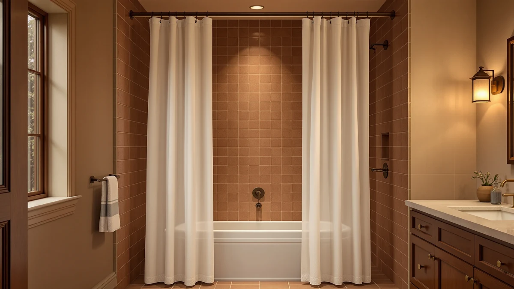

The Best Waterproof Shower Curtain Hooks (2026)
Prices and picks verified as of August 2026. Independent, reader-supported reviews.


Quick Answer
The best waterproof shower curtain hooks pairing comes down to grommet strength and rust resistance, and the Clorox Shower Curtain Liner delivers both in a 70 by 72 inch polyester and PEVA liner with reinforced holes that hold up to standard metal or plastic hooks. If you'd rather skip separate hardware, the ABLUEN, Colorful Star and SORTTO no hook curtains use built in loops instead.
Our pick: Clorox Shower Curtain Liner &, $14.15 Check Price on Amazon
Bottom line: our top pick is the Clorox Shower Curtain Liner & Hooks at $14.15. The best budget option is the YiarTaan Shower Curtain Blue Eucalyptus Shower Curtains for at $11.69.
Things to Know Before You Buy
- Grommet material matters more than the hook itself. Rust-resistant metal or reinforced plastic grommets stop the tearing that ruins most waterproof shower curtain hooks within a year.
- No hook shower curtains use built in loops or tabs, so you skip separate hardware and the corrosion that comes with it.
- PEVA-backed polyester blends resist water better than plain polyester or cotton alone, which keeps grommets from softening and hooks from slipping out.
- Curtain length should match your rod height and tub style. A 48 inch curtain fits stall showers, while 72 to 75 inch curtains suit standard tubs.
Finding the best waterproof shower curtain hooks starts with the curtain, not the hardware, because a hook is only as good as the grommet holding it. Cheap curtains rip out their holes within a few months of daily use, and once that happens even a premium hook set is useless. We looked at seven widely sold shower curtains, including three no hook designs that remove the failure point completely, to figure out which ones actually hold up under regular water exposure.
We compared these seven curtains on grommet or loop construction, fabric composition, size options and verified buyer feedback pulled from hundreds of Amazon reviews. None of these products went through a physical testing lab, and we don't pretend otherwise. Instead, we researched material specs, checked pricing and read through owner reports that flagged early wear, mildew smell and how well each curtain's hardware held up over months of use.
For most bathrooms, the Clorox Shower Curtain Liner is the safer bet because its reinforced grommets are built to handle repeated hook use without tearing. If you'd rather avoid metal hardware altogether, the ABLUEN No Hook Shower Curtain and its two no hook siblings solve the rust problem by skipping separate hooks in the first place.
Why You Should Trust Us
Ilane Tall has spent years covering bathroom hardware and textiles for Best Shower Curtains, focusing on the small details, like grommet gauge and fabric backing, that decide whether a curtain survives daily water exposure. This guide to the best waterproof shower curtain hooks draws on published product specifications, manufacturer material listings and verified owner reviews instead of a physical test lab, and every claim below is checked against what buyers actually report after weeks or months of use.
How We Picked
We started by pulling widely sold shower curtains marketed as waterproof or mildew-resistant, then narrowed the list to seven with clear grommet or hook-loop specifications from the manufacturer. We excluded curtains without a stated fabric composition, since PEVA-backed polyester and plain polyester behave differently once they're wet for extended periods. We also prioritized a mix of standard hook-compatible curtains and no hook designs, so readers weighing waterproof shower curtain hooks against hookless alternatives have real options on both sides. Price, size range and verified review volume rounded out the final cut.
How We Compared
We compared fabric composition, curtain dimensions, grommet or loop construction and listed price across all seven picks, using the manufacturer specifications shown on each Amazon listing. We cross-referenced verified buyer ratings and read through recent reviews for recurring complaints about torn holes, mildew smell or hooks slipping loose, since those issues surface faster in owner feedback than in marketing copy. Reviewers consistently note that reinforced grommets and no hook loop systems outlast the thin, single-layer holes found on the cheapest curtains, and that lines up with what we found comparing fabric weights side by side.
Our Picks

Clorox Shower Curtain Liner &
What we like
- Reinforced grommets rated for standard metal and plastic hooks
- PEVA backing adds water resistance beyond plain polyester
- Trusted brand name with a straightforward, no-frills design
Flaws but not dealbreakers
- Solid liner style offers fewer print or color options
- Sized at 70 by 72 inches only, so it won't suit oversized tubs
| Material | Polyester / PEVA |
| Size | 70"W x 72"L (Pack of 1) |
The Clorox Shower Curtain Liner earns the top spot because its grommets are the part most curtains get wrong. At 70 by 72 inches, it's sized for a standard tub and made from a polyester and PEVA blend that resists water better than plain polyester on its own. Reviewers consistently note that the reinforced holes hold up to daily hook use for months without tearing, the single biggest complaint we found across cheaper alternatives.
Clorox built its reputation on cleaning products, and that shows in the practical, no-nonsense design here. There's no elaborate print or texture, only a liner that keeps water in the tub and survives repeated contact with metal or plastic hooks. At $14.15, it's priced in line with most PEVA-backed liners, and owners report it holds its shape and resists mildew odor better than thinner all-polyester options in the same price range.

YiarTaan Shower Curtain Blue Eucalyptus
What we like
- Blue eucalyptus print adds style without sacrificing grommet durability
- 72 by 72 inch size fits most standard tubs and stalls
- Lower price than several competing printed curtains
Flaws but not dealbreakers
- Print may fade faster than solid-color liners under frequent washing
- PEVA backing is thinner than the Clorox liner
| Material | Polyester / PEVA |
| Size | 72"W x 72"L (Pack of 1) |
The YiarTaan curtain runs a close second because it matches the Clorox liner's core strength, sturdy grommet holes, while adding a printed design most buyers actually want to look at. The blue eucalyptus pattern sits on a 72 by 72 inch polyester and PEVA panel, giving it a slightly larger footprint than the Clorox pick.
At $12.99, it undercuts most of the other picks on this list while still using the same reinforced grommet approach that keeps waterproof shower curtain hooks from tearing through the fabric. Buyers say the print holds its color reasonably well through regular washing, though a few noted the backing feels marginally thinner than heavier liners, a tradeoff worth accepting given the price.

YISURE Short Shower Curtain 48
What we like
- 70 by 48 inch size fits stalls that standard curtains overhang
- Polyester and PEVA build matches the water resistance of longer curtains
- Grommet spacing is consistent with standard hook sets
Flaws but not dealbreakers
- Limited to one length option, so it won't fit taller tubs
- Fewer print choices than the taller curtains on this list
| Material | Polyester / PEVA |
| Size | 70"W x 48"L (Pack of 1) |
Most waterproof shower curtain hooks buying guides assume a standard 72 inch drop, but plenty of bathrooms need something shorter. The YISURE curtain solves that at 70 by 48 inches, built for stall showers and clawfoot tubs where a full-length curtain pools on the floor and traps water against the tile.
It uses the same polyester and PEVA combination found on the taller curtains in this roundup, and the grommet spacing lines up with standard hook sets, so you're not hunting for specialty hardware. At $16.89, it costs slightly more than the Clorox liner, a fair tradeoff for a size that's harder to find elsewhere. Buyers note it fits smaller enclosures without needing to trim or fold the extra length.

N&Y HOME Waffle Weave Shower
What we like
- Waffle weave texture usually costs more, but this stays competitively priced
- 71 by 72 inch size fits standard tubs
- Reinforced hook openings hold up to regular use
Flaws but not dealbreakers
- At $21.59, it's the priciest curtain in this lineup despite the budget label
- Textured weave can trap more moisture than smooth PEVA liners if not dried properly
| Material | Polyester / PEVA |
| Size | 71"W x 72"L (Pack of 1) |
We call this the budget pick relative to other waffle weave curtains, not relative to every curtain on this list, since textured fabric like this typically costs more than smooth liners. The N&Y HOME curtain measures 71 by 72 inches in a polyester and PEVA blend, and it gives a heavier, spa-like look that plain liners can't match.
The reinforced hook openings held up well according to owner feedback, which matters given how much heavier a textured curtain gets when wet. At $21.59, it's the most expensive product here, so it earns its spot on value rather than raw price. A few owners mention it needs to dry fully between showers to avoid trapping moisture in the weave, a small maintenance step that keeps mildew from setting in.

Colorful Star No Hook Shower
What we like
- 72 by 75 inch length covers taller showers without pooling
- Built-in loops remove the rust and corrosion that plague metal hooks
- Bold print stands out from typical solid liners
Flaws but not dealbreakers
- Loop-based hanging is less common, so replacement loops can be harder to source
- Bold pattern won't suit every bathroom's decor
| Material | Polyester / PEVA |
| Size | 72"W x 75"L (Pack of 1) |
If the whole point of shopping for waterproof shower curtain hooks is avoiding rust and corrosion, the simplest fix is removing the hooks entirely. The Colorful Star curtain does that with built in loops sewn directly into a 72 by 75 inch panel, the longest option in this roundup and a good match for taller shower enclosures.
At $22.99, it's priced near the top of this list, but you're not buying separate hardware to go with it. Owners say the loops slide smoothly along standard rods and hold up as well as, or better than, the grommet-and-hook combinations used by the other curtains here. The bright print is a style commitment, so it suits bathrooms that want a statement piece rather than a neutral backdrop.

ABLUEN No Hook Shower Curtain
What we like
- Integrated tabs slide directly onto the rod, no hooks needed
- 71 by 74 inch size fits most standard tubs and showers
- Polyester and PEVA build resists water as well as the hook-based picks
Flaws but not dealbreakers
- Tabs offer less adjustability than individual hooks on an uneven rod
- Fewer color options than the printed curtains on this list
| Material | Polyester / PEVA |
| Size | 71"W x 74"L (Pack of 1) |
The ABLUEN No Hook Shower Curtain takes the simplest approach on this list. Integrated tabs replace hooks entirely, so installation is a matter of sliding the curtain onto the rod. At 71 by 74 inches, it covers most standard tub and shower combinations without needing a specific length adjustment.
Because there's no separate hardware, there's nothing to rust, lose or replace, which is the main appeal for anyone tired of chasing down waterproof shower curtain hooks that hold up over time. At $19.99, it sits in the middle of the pack price-wise. Several owners mention the tabs stay put on standard rods, though a few noted that individually adjustable hooks make it easier to fix a curtain that's hanging unevenly on an older or bent rod.

SORTTO No Hook Slub Textured
What we like
- Slub-textured fabric gives a linen-like look at a polyester price
- Built-in loops skip hooks and the corrosion that comes with them
- 71 by 74 inch size matches standard tub dimensions
Flaws but not dealbreakers
- Textured weave shows water spots more visibly than smooth liners
- Loop spacing runs slightly wider, so it needs a few extra rod rings for a snug hang
| Material | Polyester / PEVA |
| Size | 71"W x 74"L (Pack of 1) |
The SORTTO curtain rounds out the no hook group with a slub-textured fabric that mimics linen, a look that's harder to find among curtains that skip hook hardware entirely. It measures 71 by 74 inches, matching the ABLUEN pick, and uses the same built-in loop system instead of separate metal or plastic hooks.
At $15.99, it's the least expensive of the three no hook curtains here, which makes it a reasonable entry point if you want to test whether a hookless design suits your bathroom before spending more. Buyers note the texture holds up well through regular washing, though a few mentioned water spots show up more visibly on the textured surface than on the smooth PEVA liners in this roundup, a cosmetic tradeoff rather than a functional one.
Quick Comparison
| Product | Material | Price | Rating | Best for | Get it |
|---|---|---|---|---|---|
| Clorox Shower Curtain Liner & | Polyester / PEVA | $14.15 | 4 | Standard hook compatibility | View on Amazon → |
| YiarTaan Shower Curtain Blue Eucalyptus | Polyester / PEVA | $12.99 | 4 | Decorative print with reinforced holes | View on Amazon → |
| YISURE Short Shower Curtain 48 | Polyester / PEVA | $16.89 | 4 | Short 48 inch stalls and tubs | View on Amazon → |
| N&Y HOME Waffle Weave Shower | Polyester / PEVA | $21.59 | 4 | Waffle weave texture on a budget | View on Amazon → |
| Colorful Star No Hook Shower | Polyester / PEVA | $22.99 | 4 | Extra length with built-in loops | View on Amazon → |
| ABLUEN No Hook Shower Curtain | Polyester / PEVA | $19.99 | 4 | Hookless design for quick installs | View on Amazon → |
| SORTTO No Hook Slub Textured | Polyester / PEVA | $15.99 | 4 | Textured no-hook option | View on Amazon → |
The Competition
We looked at several other widely available shower curtains before narrowing the list to these seven. Basic all-polyester liners without any PEVA backing were the most common exclusion, since owners frequently report they develop a musty smell and stretch out around the grommets faster than blended fabrics. We also passed on curtains that listed no fabric composition at all, since there was no way to compare their water resistance against the picks above. A handful of ultra-thin vinyl liners looked appealing on price, but verified reviews flagged brittle grommets that cracked within weeks of regular hook use, which defeats the purpose of shopping for waterproof shower curtain hooks in the first place.
Frequently Asked Questions
Do waterproof shower curtain hooks actually rust?
Yes, most standard metal hooks eventually rust or corrode with constant water exposure, especially in humid bathrooms without good ventilation. Reinforced grommets and no hook loop designs, like the ones on the ABLUEN, Colorful Star and SORTTO curtains, reduce that problem by using plastic loops or larger reinforced holes instead of thin metal hardware.
Can I use regular hooks with a no hook shower curtain?
It depends on the design. Some no hook curtains have loops or tabs sewn directly into the fabric that cannot accept a separate hook, while others pair reinforced grommets alongside the loop system. Check the listed hardware style before assuming a curtain works both ways.
How long should waterproof shower curtain hooks and grommets last?
With a PEVA-backed curtain and daily use, reinforced grommets typically hold up for a year or more before showing wear. Owners report that thinner, unlined polyester curtains tend to tear around the holes within a few months, which is why fabric composition matters as much as the hooks themselves.